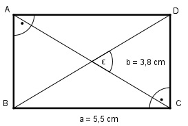

Aufgabe 41 Berechnen Sie den Schnittwinkel ε der beiden Diagonalen.

Im Dreieck BCD: b 3,8 cm tan α = --- = --------- = 0,6909 --> α = 34,6° a 5,5 cm γ = 90° - α = 90° - 34,6° = 55,4° Die beiden Diagonalen unterteilen das Rechteck in gleichschenklige Dreiecke: ε = 180° - 2 * γ = 180° - 2 * 55,4° = 69,2°